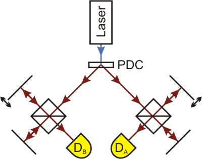
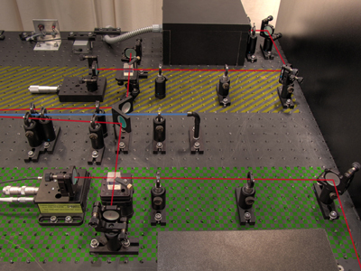

Zwei-Photonen-Interferenz nach Franson
Die Interferenz eines durch parametrische Floureszenz erzeugten Photonenpaares beruht auf einem von J.D. Franson entdeckten Quanteneffekt [Fra89]. Im Kapitel Interferenz wurde gezeigt, wie einzelne Photonen durch ein Michelson-Interferometer zur Interferenz gebracht werden können.
Dort wurde im Unterkapitel 5 auch die Bedeutung der Kohärenzlänge erklärt: ist die Armlängendifferenz im Interferometer größer als die Kohärenzlänge des einzelnen Photons, ist keine Interferenz beobachtbar. In einem interaktiven Bildschirmexperiment wurde die Bedeutung der verwendeten Filter gezeigt. Bei Verwendung eines schmaleren Bandpassfilters, der Photonen der Wellenlängen 810±10nm durchlässt, beträgt die Kohärenzlänge ca. 60µm. Mit einem Filter, der eine spektrale Breite von 810±20nm verursacht, sinkt sie auf etwa 17µm.
Für das folgende Experiment werden Langpassfilter verwendet, die Photonen mit Wellenlängen von mehr als 715nm transmittieren, was zu einer sehr kleinen Kohärenzlänge von etwa 3,5µm führt. Damit kann der gesamte Interferenzbereich mit dem schon zuvor verwendeten Verschiebetisch durchfahren werden.
In diesem Experiment spielt wieder die Quanteneigenschaft Verschränkung eine zentrale Rolle. Allerdings kommt es dabei nicht wie im dazugehörigen Kapitel auf die Polarisationseigenschaften an, sondern auf die Erzeugungszeit und die Energie beziehungsweise Frequenz der Photonen. Diese werden (fast) gleichzeitig mittels parametrischer Floureszenz erzeugt und erfüllen damit auch die Bedingung ωLaser = ωA + ωB. Die Frequenzen der beiden Photonen addieren sich also immer zum gleichen Wert.
Aufbau des Experiments
Zur Durchführung des Experiments wird nun der im Kapitel Interferenz vorgestellte Aufbau für Einzelphotoneninterferenz erweitert. Abbildung 1 zeigt eine Übersicht der Realisierung im Labor.
 
Abb. 1: Experiment für Zwei-Photonen-Interferenz. Links Skizze, rechts Realisierung.
Dabei werden beide Photonen in je ein Interferometer geleitet und mit den Detektoren DA und DB registriert. Damit kann jedes Photon als Trigger für das andere benutzt werden. Wie schon im Kapitel Verschränkung sind die beiden Seiten mit "Alice" (im Foto gelb schraffiert) und "Bob" (grün kariert) bezeichnet. Betrachtet werden nun die Koinzidenzen bei verschiedenen Stellungen der verschiebbaren Interferometerspiegel. Der bewegliche Spiegel von Interferometer Bob kann von jedem gewählten Startpunkt aus um 20µm verschoben werden. Diese geringe Positionsänderung ist aber mit dem Auge nicht zu erkennen.
Das Interferometer der Seite Alice ist während allen Messungen auf eine feste Armlängendifferenz von 50µm eingestellt. Damit ist auszuschließen, dass dort "gewöhnliche" Interferenzerscheinungen auftreten, da die Kohärenzlänge der einzelnen Photonen nicht ausreichen würde.
Zeigt sich Interferenz, wenn das Interferometer Alice auf eine Armlängendifferenz, die größer ist als die Kohärenzlänge, eingestellt ist und die Messung auf der Seite Bob innerhalb der Kohärenzlänge stattfindet (Startpunkt ΔLBob≈0µm)? Kann diese Variation der Zählrate auftreten, wenn beide Interferometer eine Armlängendifferenz, die größer als die Kohärenzlänge ist, aufweisen (Startpunkt ΔLBob≈30µm und ΔLBob≈50µm)?
Welche Messkurven würde man erwarten, wenn die Photonen keine Interferenz zeigen, welche wenn Interferenz auftritt?
Beobachtung und Erklärung
Befindet sich das Interferometer Bob in einer Konfiguration, bei der die Armlängendifferenz kleiner als die Kohärenzlänge ist, kann man Interferenz beobachten. Das Experiment ist vom Prinzip her identisch mit dem aus dem Kapitel Interferenz, die Seite Alice wird genauso wie dort nur zum Triggern verwendet (Startpunkt ΔLBob≈0µm).
Auch bei einer Armlängendifferenz, die in beiden Interferometern größer als die Kohärenzlänge der einzelnen Photonen ist, lässt sich Interferenz beobachten, wenn der Unterschied zwischen den Armlängendifferenzen kleiner als die Kohärenzlänge des Photonenpaares ist (Startpunkt ΔLBob≈50µm). Dies kann damit erklärt werden, dass ein Interferometer auch als Frequenzmessgerät gesehen werden kann. Durch die Frequenzverschränkung der Photonen wird nun durch die Messung der Frequenz des einen Lichtquants auch die des anderen festgelegt. Je nach dem, wie groß der Armlängendifferenzunterschied zwischen beiden Seiten ist, tritt konstruktive oder destruktive Interferenz auf.
Die Sichtbarkeit der Interferenz ist sehr hoch, wenn die Armlängendifferenz kleiner ist als die Kohärenzlänge (ca. 80-90%). Wird um die Spiegelposition ΔLBob≈50µm gemessen, ist die Sichtbarkeit kleiner (<50%), was daran liegt, dass die Fälle, in denen ein Photon den kurzen Pfad des Interferometers durchläuft und das andere den langen, nicht zur Interferenz beitragen.
Wenn die Armlängendifferenzen nicht im gleichen Bereich liegen, jede einzelne aber trotzdem größer ist als die Kohärenzlänge der Photonen, bleibt die Zählrate bis auf geringe Schwankungen konstant, es treten also keine Interferenzeffekte auf.
Wissenschaftlicher Nutzen der Zwei-Photonen-Interferenz
Dieser Quanteneffekt wurde in einigen Experimenten dazu verwendet, die Notwendigkeit und Richtigkeit der Quantentheorie zu zeigen und die Möglichkeit, dass Erklärungen im Sinne der klassischen Physik existieren, auszuschließen.
Originaldaten aus dem Experiment: Zwei-Photonen-Interferenz nach Franson
Autor: Florian Bier, Juni 2010